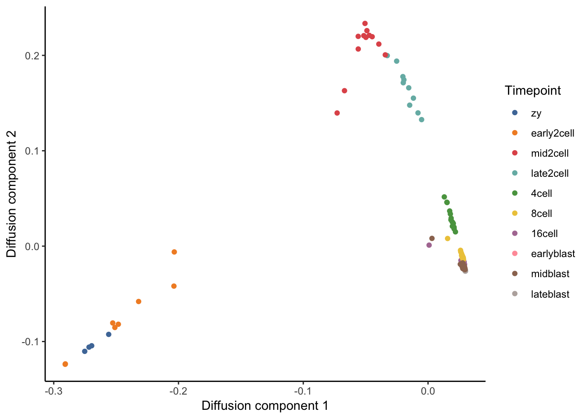
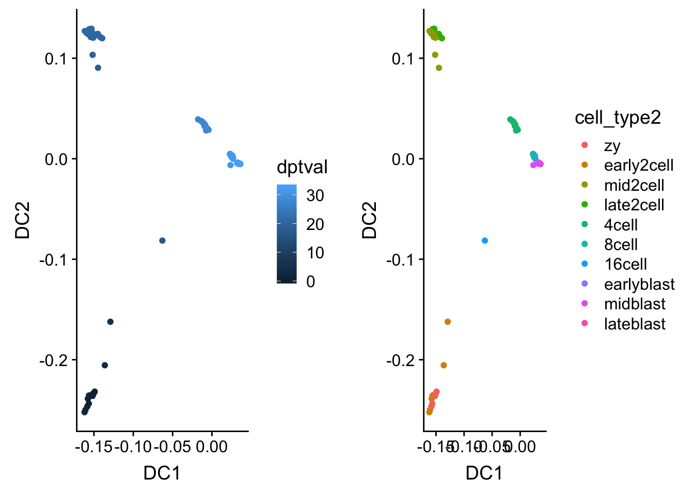
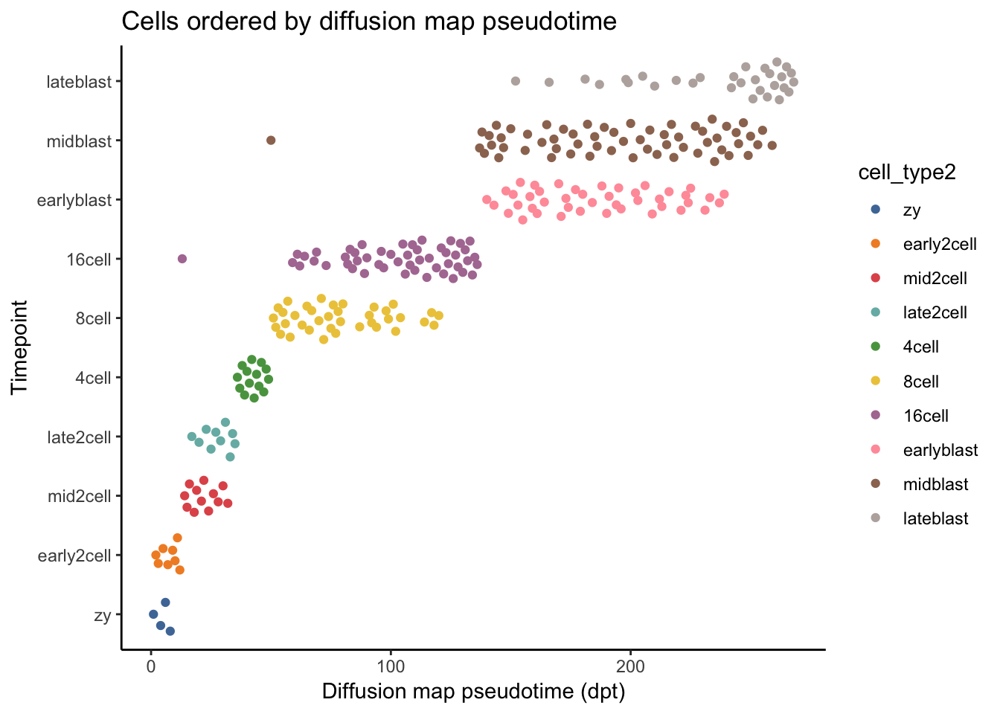

17 Functional Pseudotime Analysis
In this lab, we will analyze a single cell RNA-seq dataset that will teach us about several methods to infer the differentiation trajectory of a set of cells. These methods can order a set of individual cells along a path / trajectory / lineage, and assign a pseudotime value to each cell that represents where the cell is along that path. This can be a starting point for further analysis to determine gene expression programs driving interesting cell phenotypes. As you are running the code, think about how the algorithms work and what you like and do not like about the assumptions and utilities provided by the algorithm.
Note: you can increase the system memory available to Docker by going to Docker -> Preferences -> Advanced and shifting the Memory slider.
17.1 Load settings and packages
17.2 First look at the differentiation data from Deng et al.
We will use a nice SMART-Seq2 single cell RNA-seq data from Single-Cell RNA-Seq Reveals Dynamic, Random Monoallelic Gene Expression in Mammalian Cells. Here is one relevant detail from their paper: “To investigate allele-specific gene expression at single-cell resolution, we isolated 269 individual cells dissociated from in vivo F1 embryos (CAST/EiJ × C57BL/6J, hereafter abbreviated as CAST and C57, respectively) from oocyte to blastocyst stages of mouse preimplantation development (PD)”
Let us take a first look at the Deng data. One simple approach to ordering cells in pseudotime is to use PCA. By carrying out PCA and labeling the cells by the stage at which they were collected, we can see how well the principal components separate cells along a differentiation trajectory.
# Read in single cell data.
path.deng <- paste0(mydir, "deng-reads.rds")
deng_SCE <- readRDS(path.deng)
# What class is the deng_SCE object, and how is it organized?
class(deng_SCE)## [1] "SingleCellExperiment"
## attr(,"package")
## [1] "SingleCellExperiment"structure(deng_SCE)## class: SingleCellExperiment
## dim: 22431 268
## metadata(0):
## assays(2): counts logcounts
## rownames(22431): Hvcn1 Gbp7 ... Sox5 Alg11
## rowData names(10): feature_symbol is_feature_control ...
## total_counts log10_total_counts
## colnames(268): 16cell 16cell.1 ... zy.2 zy.3
## colData names(30): cell_type2 cell_type1 ... pct_counts_ERCC
## is_cell_control
## reducedDimNames(0):
## spikeNames(1): ERCC# How many mouse cells are at each stage?
table(deng_SCE$cell_type1)##
## 16cell 2cell 4cell 8cell blast zygote
## 50 22 14 37 133 12table(deng_SCE$cell_type2)##
## 16cell 4cell 8cell early2cell earlyblast late2cell
## 50 14 37 8 43 10
## lateblast mid2cell midblast zy
## 30 12 60 4# Re-order the levels of the factor storing the cell developmental stage.
deng_SCE$cell_type2 <- factor(deng_SCE$cell_type2,
levels = c("zy", "early2cell", "mid2cell", "late2cell",
"4cell", "8cell", "16cell", "earlyblast", "midblast",
"lateblast"))
# Run PCA on Deng data. Use the runPCA function from the SingleCellExperiment package.
deng_SCE <- runPCA(deng_SCE, ncomponents = 50)
# Use the reducedDim function to access the PCA and store the results.
pca <- reducedDim(deng_SCE, "PCA")
# Describe how the PCA is stored in a matrix. Why does it have this structure?
head(pca)## PC1 PC2 PC3 PC4 PC5 PC6
## 16cell -4.616718 -13.67367 1.6860222 -0.3971110 0.4331834 -3.3351871
## 16cell.1 -5.528782 -11.18717 2.9383081 0.2381910 0.1644197 -0.8666549
## 16cell.2 -5.067554 -13.50145 1.6200888 -1.4489428 -0.3560664 -2.7057527
## 16cell.3 -5.604999 -12.42408 1.2092483 0.7560287 -0.9812613 0.1008600
## 16cell.4 -4.989056 -12.64989 0.9518061 2.0114694 2.1210373 -0.5469395
## 16cell.5 -4.605128 -13.35725 1.2909256 -0.6736846 2.1882002 -2.7699870
## PC7 PC8 PC9 PC10 PC11 PC12
## 16cell -0.6236209 0.3621665 -1.2910579 2.386634 -1.824875 0.4400858
## 16cell.1 -0.4232062 -1.0859542 -2.0577693 2.566871 -2.663335 -3.2087906
## 16cell.2 1.7515857 0.1552950 -1.5951345 1.879552 -3.237261 -0.9710867
## 16cell.3 1.0103357 -0.4448119 -0.6081911 -1.059523 -4.416895 -0.7229430
## 16cell.4 0.0563789 -0.7070924 -1.2665595 2.733815 -1.090173 -0.7688942
## 16cell.5 0.9010465 1.0445247 -2.8906108 2.886413 -1.844421 -4.2520016
## PC13 PC14 PC15 PC16 PC17
## 16cell -0.77758746 2.11643418 -0.8244988 0.4831872 -0.8213527
## 16cell.1 1.95567784 -1.12330816 -2.0169080 2.0721840 0.4924598
## 16cell.2 1.77982275 0.02196743 -2.0566764 2.1791387 -1.8205026
## 16cell.3 1.82741705 -2.96140322 -2.0898322 -1.8926069 -1.2088311
## 16cell.4 0.01732681 -0.77442110 -2.4652798 2.6683790 -1.0930128
## 16cell.5 1.26660076 -0.08437871 -1.9085246 0.8621796 -0.2821138
## PC18 PC19 PC20 PC21 PC22
## 16cell 2.912998472 -0.1114755 0.6633269 -0.88984647 2.73819461
## 16cell.1 1.555585976 -1.1341038 -2.4003738 -1.00116216 2.79983998
## 16cell.2 1.544638100 0.2775379 -1.2832673 -0.46297320 0.08161412
## 16cell.3 -1.164002801 0.8564781 -1.0032480 -0.02165817 2.81656780
## 16cell.4 0.492283751 0.1123406 0.6449514 -1.48016504 1.69637235
## 16cell.5 -0.004085098 0.9727746 -0.8545002 -0.82326712 -0.49085584
## PC23 PC24 PC25 PC26 PC27
## 16cell -1.2833723 0.26093070 -0.9025236 -0.9199517 0.7705592
## 16cell.1 -2.0626007 -1.49145200 -0.3073604 -1.6213086 -0.4668769
## 16cell.2 -0.6273122 -0.82463839 -0.3514344 -0.9143962 0.1285442
## 16cell.3 1.1540990 1.64935692 -2.8926707 0.5279823 1.0364766
## 16cell.4 1.3036491 -0.04931057 -1.8065901 -2.3286922 0.7928030
## 16cell.5 -2.4572424 0.28548367 0.9919387 -1.3399723 -0.4663864
## PC28 PC29 PC30 PC31 PC32
## 16cell -1.1942837 3.3616090 -0.8339894 -2.6264466 0.2088315099
## 16cell.1 0.9442624 -1.3557627 1.5239438 -0.3786813 -2.0367506324
## 16cell.2 -1.4033309 0.5669192 -0.5764371 0.2240873 0.2092731123
## 16cell.3 2.1822899 0.3327657 -3.9188841 -0.2036249 -1.1033810361
## 16cell.4 1.5970783 -1.1079176 -0.6441109 -2.8524393 0.0004546378
## 16cell.5 2.7023565 1.1374510 -2.8720566 -1.0064513 1.8063507928
## PC33 PC34 PC35 PC36 PC37
## 16cell 1.1394308 0.3840000 -0.30028319 0.5470062 -2.2521121
## 16cell.1 0.4802093 -1.5461206 0.57785418 0.2136878 -3.1427911
## 16cell.2 -0.6020883 0.2587835 -1.39670584 1.0217782 -0.9796248
## 16cell.3 -2.0222558 -1.5459463 0.98029013 1.6982863 -2.3282394
## 16cell.4 -0.8323239 0.7580553 -0.08445444 -0.3581607 1.2995240
## 16cell.5 -0.2765822 1.4528263 -0.01488841 -2.0533203 0.9582204
## PC38 PC39 PC40 PC41 PC42
## 16cell 1.54130056 -0.5503021 1.8218871 -1.2491319 0.02774323
## 16cell.1 -0.06859658 1.0455128 3.3915829 0.8911611 1.76258371
## 16cell.2 -0.93454517 -1.4591025 0.1484064 0.7292182 0.89423648
## 16cell.3 -0.95838032 0.1684409 0.6182237 0.8339745 -0.21181011
## 16cell.4 1.57202989 0.8189163 -2.3331272 -0.3108283 -0.31856432
## 16cell.5 1.45162192 2.1979823 1.0272293 -3.8152357 0.07293698
## PC43 PC44 PC45 PC46 PC47 PC48
## 16cell -1.2648452 1.3478074 -1.489203 1.6186833 -0.3300131 0.8603107
## 16cell.1 1.2310412 -0.3182549 -1.857164 -2.9553566 -2.2298687 0.4699274
## 16cell.2 0.6198856 1.9024444 0.096746 1.0150184 1.5574517 -0.3872533
## 16cell.3 -1.1234170 1.0566629 -1.311480 -0.4328987 2.7491211 -0.6665591
## 16cell.4 0.5818659 -1.2131792 1.086794 0.3857532 2.3153699 1.2776942
## 16cell.5 -0.8961840 -0.1003433 1.667234 1.5554497 -0.9303923 -0.8338826
## PC49 PC50
## 16cell -1.1294170 0.54900311
## 16cell.1 -0.9080707 -1.77789141
## 16cell.2 1.4262577 -0.08018494
## 16cell.3 -0.4120873 2.00067268
## 16cell.4 -0.9602715 -0.02929732
## 16cell.5 1.2653639 1.63364381dim(pca)## [1] 268 50# Add PCA data to the deng_SCE object.
deng_SCE$PC1 <- pca[, 1]
deng_SCE$PC2 <- pca[, 2]
# Plot PC biplot with cells colored by cell_type2.
# colData(deng_SCE) accesses the cell metadata DataFrame object for deng_SCE.
# Look at Figure 1A of the paper as a comparison to your PC biplot.
ggplot(as.data.frame(colData(deng_SCE)), aes(x = PC1, y = PC2, color = cell_type2)) + geom_quasirandom(groupOnX = FALSE) +
scale_color_tableau() + theme_classic() +
xlab("PC1") + ylab("PC2") + ggtitle("PC biplot")
# PCA is a simple approach and can be good to compare to more complex algorithms
# designed to capture differentiation processes. As a simple measure of pseudotime
# we can use the coordinates of PC1.
# Plot PC1 vs cell_type2.
deng_SCE$pseudotime_PC1 <- rank(deng_SCE$PC1) # rank cells by their PC1 score
ggplot(as.data.frame(colData(deng_SCE)), aes(x = pseudotime_PC1, y = cell_type2,
colour = cell_type2)) +
geom_quasirandom(groupOnX = FALSE) +
scale_color_tableau() + theme_classic() +
xlab("PC1") + ylab("Timepoint") +
ggtitle("Cells ordered by first principal component")
ggsave(paste0(mydir, "/pseudotime_PC1.png"))## Saving 7 x 5 in image# Try separating the cell types using other PCs. How does the separation look?17.3 Diffusion map pseudotime
Let us see how a more advance trajectory inference method, diffusion maps and diffusion pseudotime, performs at placing cells along the expected differentiation trajectory.
Diffusion maps were introduced by Ronald Coifman and Stephane Lafon, and the underlying idea is to assume that the data are samples from a diffusion process. The method infers the low-dimensional manifold by estimating the eigenvalues and eigenvectors for the diffusion operator related to the data.
Angerer et al have applied the diffusion maps concept to the analysis of single-cell RNA-seq data to create an R package called destiny.
We will use two forms of pseudotime: the first diffusion component and the diffusion pseudotime.
# Prepare a counts matrix with labeled rows and columns.
deng <- logcounts(deng_SCE) # access log-transformed counts matrix
cellLabels <- deng_SCE$cell_type2
colnames(deng) <- cellLabels
# Make a diffusion map.
dm <- DiffusionMap(t(deng))
# Optional: Try different sigma values when making diffusion map.
# dm <- DiffusionMap(t(deng), sigma = "local") # use local option to set sigma
# sigmas <- find_sigmas(t(deng), verbose = FALSE) # find optimal sigma
# dm <- DiffusionMap(t(deng), sigma = optimal_sigma(sigmas))
# Plot diffusion component 1 vs diffusion component 2 (DC1 vs DC2).
tmp <- data.frame(DC1 = eigenvectors(dm)[, 1],
DC2 = eigenvectors(dm)[, 2],
Timepoint = deng_SCE$cell_type2)
ggplot(tmp, aes(x = DC1, y = DC2, colour = Timepoint)) +
geom_point() + scale_color_tableau() +
xlab("Diffusion component 1") +
ylab("Diffusion component 2") +
theme_classic()
# Try plotting higher diffusion components against one another.
# Next, let us use the first diffusion component (DC1) as a measure of pseudotime.
# How does the separation by cell stage look?
deng_SCE$pseudotime_diffusionmap <- rank(eigenvectors(dm)[,1]) # rank cells by their dpt
ggplot(as.data.frame(colData(deng_SCE)),
aes(x = pseudotime_diffusionmap,
y = cell_type2, colour = cell_type2)) +
geom_quasirandom(groupOnX = FALSE) +
scale_color_tableau() + theme_classic() +
xlab("Diffusion component 1 (DC1)") + ylab("Timepoint") +
ggtitle("Cells ordered by DC1")
ggsave(paste0(mydir, "/pseudotime_DC1.png"))## Saving 7 x 5 in image# Plot eigenvalues of diffusion distance matrix. How many diffusion components would you use?
# This is analagous to the PC elbow plot (scree plot) that we previously used to assess how
# many PCs to use in downstream applications like clustering.
plot(eigenvalues(dm), ylim = 0:1, pch = 20, xlab = 'Diffusion component (DC)', ylab = 'Eigenvalue')
# What happens if you run the diffusion map on the PCs? Why would one do this?
rownames(pca) <- cellLabels
dm <- DiffusionMap(pca)
# Diffusion pseudotime calculation.
# Set index or tip of pseudotime calculation to be a zygotic cell (cell 268).
dpt <- DPT(dm, tips = 268)
# Plot DC1 vs DC2 and color the cells by their inferred diffusion pseudotime.
# We can accesss diffusion pseudotime via dpt$dpt.
df <- data.frame(DC1 = eigenvectors(dm)[, 1], DC2 = eigenvectors(dm)[, 2],
dptval = dpt$dpt, cell_type2 = deng_SCE$cell_type2)
p1 <- ggplot(df) + geom_point(aes(x = DC1, y = DC2, color = dptval))
p2 <- ggplot(df) + geom_point(aes(x = DC1, y = DC2, color = cell_type2))
p <- plot_grid(p1, p2)
p
save_plot(paste0(mydir, "/dpt_celltype.png"), p, base_height = 5, base_aspect_ratio = 2)
# Plot diffusion pseudotime vs timepoint.
# Which separates the data better, DC1 or diffusion pseudotime?
deng_SCE$pseudotime_dpt <- rank(dpt$dpt)
ggplot(as.data.frame(colData(deng_SCE)),
aes(x = pseudotime_dpt,
y = cell_type2, colour = cell_type2)) +
geom_quasirandom(groupOnX = FALSE) +
scale_color_tableau() + theme_classic() +
xlab("Diffusion map pseudotime (dpt)") +
ylab("Timepoint") +
ggtitle("Cells ordered by diffusion map pseudotime")
ggsave(paste0(mydir, "/pseudotime_dpt.png"))## Saving 7 x 5 in image# Save current progress.
# save(deng_SCE, file = Rda.destiny.path)
# To load the data, run the following command.
# load(Rda.destiny.path)17.4 Slingshot map pseudotime
Let us see how another advance trajectory inference method, Slingshot, performs at placing cells along the expected differentiation trajectory.
library(slingshot)
library(Seurat)
# Read the Slingshot documentation (?slingshot) and then run Slingshot below.
# Given your understanding of the algorithm and the documentation, what is one
# major set of parameters we omitted here when running Slingshot?
sce <- slingshot(deng_SCE, reducedDim = 'PCA') # no clusters
# Plot PC1 vs PC2 colored by Slingshot pseudotime.
colors <- rainbow(50, alpha = 1)
plot(reducedDims(sce)$PCA, col = colors[cut(sce$slingPseudotime_1,breaks=50)], pch=16, asp = 1)
lines(SlingshotDataSet(sce), lwd=2)
# Plot Slingshot pseudotime vs cell stage.
ggplot(as.data.frame(colData(deng_SCE)), aes(x = sce$slingPseudotime_1, y = cell_type2,
colour = cell_type2)) +
geom_quasirandom(groupOnX = FALSE) +
scale_color_tableau() + theme_classic() +
xlab("Slingshot pseudotime") + ylab("Timepoint") +
ggtitle("Cells ordered by Slingshot pseudotime")
# Cluster cells using the Seurat workflow below.
gcdata <- CreateSeuratObject(counts = counts(deng_SCE), min.cells = 0, min.genes = 0, project = "slingshot")
gcdata <- NormalizeData(object = gcdata, normalization.method = "LogNormalize",
scale.factor = 10000)
gcdata <- FindVariableGenes(object = gcdata, mean.function = ExpMean, dispersion.function = LogVMR, x.low.cutoff = 0.1, x.high.cutoff = 3, y.cutoff = 0.5)
gcdata <- ScaleData(object = gcdata, do.center = T, do.scale = F)
gcdata <- RunPCA(object = gcdata, pc.genes = gcdata@var.genes, do.print = TRUE, pcs.print = 1:5,
genes.print = 5)
gcdata <- FindClusters(object = gcdata, reduction.type = "pca", dims.use = 1:20,
resolution = 0.6, print.output = 0, save.SNN = TRUE)
# Add clustering information from Seurat to the deng_SCE object
# Then run Slingshot using these cluster assignments.
deng_SCE$slingPseudotime_1 <- NULL # remove old slingshot pseudotime data
colData(deng_SCE)$Seurat_clusters <- as.character(gcdata@ident) # go from factor to character
deng_SCE <- slingshot(deng_SCE, clusterLabels = 'Seurat_clusters', reducedDim = 'PCA')
# Plot PC1 vs PC2 colored by Slingshot pseudotime.
colors <- rainbow(50, alpha = 1)
plot(reducedDims(deng_SCE)$PCA, col = colors[cut(deng_SCE$slingPseudotime_1,breaks=50)], pch=16, asp = 1)
lines(SlingshotDataSet(deng_SCE), lwd=2)
# Plot Slingshot pseudotime vs cell stage.
ggplot(as.data.frame(colData(deng_SCE)), aes(x = slingPseudotime_1, y = cell_type2,
colour = cell_type2)) +
geom_quasirandom(groupOnX = FALSE) +
scale_color_tableau() + theme_classic() +
xlab("Slingshot pseudotime") + ylab("Timepoint") +
ggtitle("Cells ordered by Slingshot pseudotime")
ggsave(paste0(mydir, "/pseudotime_slingshot.png"))
# Save current progress.
# save(deng_SCE, file = Rda.slingshot.path)
# To load the data, run the following command.
# load(Rda.slingshot.path)17.5 Find temporally expressed genes
In this final analysis code chunk, we will identify temporally expressed genes, ie those genes whose expression is changing in a continuous manner over pseudotime. To do this, we will fit a GAM with a LOESS term for pseudotime. Functions for fitting and working with generalized additive models, as described in “Generalized Additive Models” (Hastie and Tibshirani, 1990). Read more about GAMs
install.packages("gam")
library(gam)
# Only look at the 1,000 most variable genes when identifying temporally expressesd genes.
# Identify the variable genes by ranking all genes by their variance.
Y <- log2(counts(deng_SCE) + 1)
var1K <- names(sort(apply(Y, 1, var),decreasing = TRUE))[1:1000]
Y <- Y[var1K, ] # only counts for variable genes
# Fit GAM for each gene using pseudotime as independent variable.
t <- deng_SCE$slingPseudotime_1
gam.pval <- apply(Y, 1, function(z){
d <- data.frame(z=z, t=t)
tmp <- gam(z ~ lo(t), data=d)
p <- summary(tmp)[4][[1]][1,5]
p
})
# Identify genes with the most significant time-dependent model fit.
topgenes <- names(sort(gam.pval, decreasing = FALSE))[1:100]
# Prepare and plot a heatmap of the top genes that vary their expression over pseudotime.
require(clusterExperiment)
heatdata <- as.matrix(gcdata@data[rownames(gcdata@data) %in% topgenes, order(t, na.last = NA)])
heatclus <- gcdata@ident[order(t, na.last = NA)]
png(paste0(mydir, "heatmap_time_genes.png"), width=10, height=10, units = "in", res=200)
ce <- ClusterExperiment(heatdata, heatclus, transformation = log1p)
clusterExperiment::plotHeatmap(ce, clusterSamplesData = "orderSamplesValue", visualizeData = 'transformed', cexRow = 1.5, fontsize = 15)
dev.off()17.6 Comparison of the different trajectory inference methods
How do the trajectories inferred by PCA, diffusion pseudotime, and slingshot pseudotime compare to one another?
install.packages("corrplot")
library(corrplot)
# Prepare data frame with different pseudotime measures.
df_pseudotime <- as.data.frame(colData(deng_SCE)[, c("pseudotime_PC1", "pseudotime_dpt", "slingPseudotime_1")])
colnames(df_pseudotime) <- c("PC1", "diffusion", "slingshot")
# Plot correlation between different pseudotime measures.
corrplot.mixed(cor(df_pseudotime, use = "na.or.complete"),
order = "hclust", tl.col = "black",
main = "Correlation matrix for pseudotime results",
mar = c(0, 0, 3.1, 0))17.7 Plots of gene expression over time.
Visualize how some of the temporally expressed genes change in time.
plotExpression(deng_SCE, "Obox5", x = "PC1",
colour_by = "cell_type2", show_violin = FALSE,
show_smooth = TRUE)
plotExpression(deng_SCE, "Obox5", x = "pseudotime_dpt",
colour_by = "cell_type2", show_violin = FALSE,
show_smooth = TRUE)
plotExpression(deng_SCE, "Obox5", x = "slingPseudotime_1",
colour_by = "cell_type2", show_violin = FALSE,
show_smooth = TRUE)17.8 Acknowledgements
This document builds off chapter 8.4 from the Hemberg lab single cell RNA-seq course, from the Destiny vignette and from the Slingshot vignette.